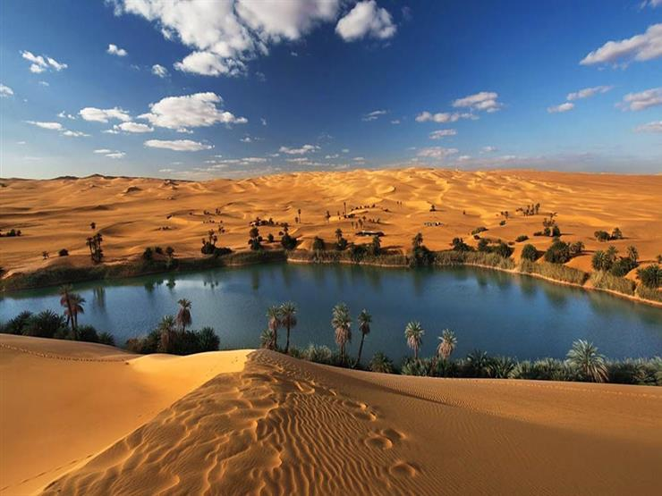
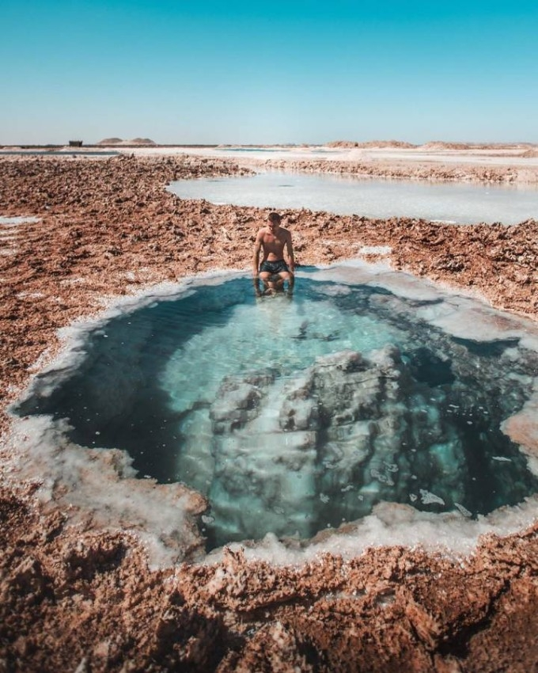
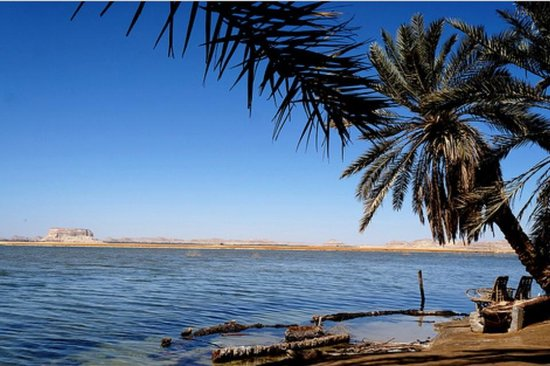
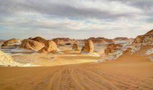
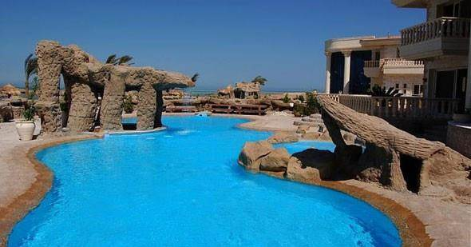
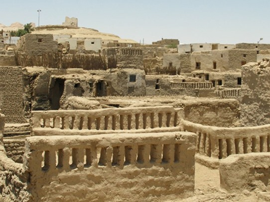
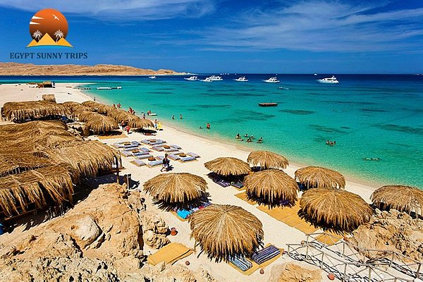
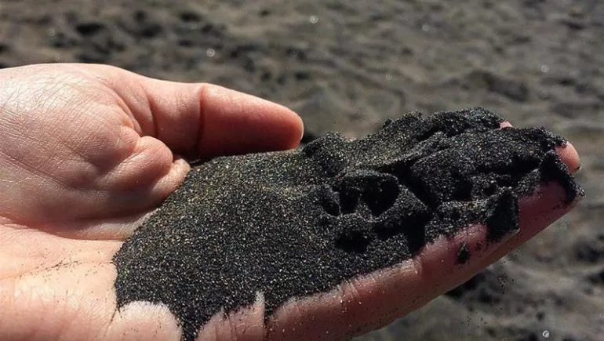

أحتلت مصر موقعاً متميزاً على خريطة السياحة العلاجية واصبحت مقصداً لراغبى الاستشفاء من جميع انحاء العالم حيث يأتى اليها السائحون للأستمتاع بالمناخ الصحى والعلاج الطبى الطبيعى تحت رعاية أطباء متخصصين فى جميع الفروع والمستشفيات الحديثة التى يتوافر بها أحدث الاجهزة العالمية يساندهم أخصائيون فى التمرين والعلاج الطبيعى على أعلى مستوى من الخدمة .الى جانب تقديم برامج سياحية متنوعة لزيارة الاماكن السيحية الفريدة فى مصر.
الاستشفاء الطبيعى بمصر:
تنتشر فى مصر مئات من العيون والآبار الطبيعية ذات المياه المعدنية والكبريتية , تختلف فى العمق والسعة ودرجة الحرارة بين 30 , 73 درجة مئوية. وقد أثبتت التحليلات المعملية احتواء الكثير من هذه الينابيع الطبيعية على أعلى نسبة من عنصر الكبريت مقارنة بالأبار المنتشرة فى شتى أنحاء العالم كما تحتوى هذه المياه الطبيعية على عدة أملاح معدنية وبعض المعادن ذات القيمة العلاجية من أمثال كربونات الصوديوم ونسب متفاوتة من بعض العناصر الفلزية مثل الماغنسيوم والحديد .
كما أظهرت القياسات المعملية ملاءمة نسبة الملوحة فى هذه الموارد المائية الطبيعية للأغراض الاستشفائية ويضاف الى ذلك انتشار آبار المياه الطبيعية النقية الصالحة للشرب , والتى توسعت مصر فى استثمارها وإنتاجها على نحو إقتصادى فى السنوات الأخيرة فى إطار رقابة علمية صارمة على الجودة والمواصفات القياسية من حيث النقاء من الشوائب والطفيليات والجراثيم , ودرجة عسر الماء والتركيب الكيميائى , مما دفع بالعديد من الشركات الوطنية والأجنبية الكبرى الى التنافس للاستثمار فى هذا المجال .
ولم تكن رمال مصر أقل ثراء من مياها فقد أظهرت الدراسات احتواء الكثبان الرملية بالصحراء المصرية على نسب مأمونة وعظيمة الفائدة من العناصر المشعة , وقد أدى العلاج بطمر الجسم أو الوضع المؤلم منه بالرمال لفترات مدروسة ومحددة الى نتائج غير مسبوقة فى عدة أمراض روماتزمية مثل مرض الروماتويد والآلام الناجمة عن أمراض العمود الفقرى وغير ذلك من اسباب الألم الحاد والمزمن , مما يحار فيه الطب الحديث.
تتميز حلوان بجوها الجاف , ونسبة رطوبة لا تتجاوز 58% بالإضافة الى عدة عيون معدنية وكبريتية لا مثيل لها فى العالم من حيث درجة النقاء والفائدة العلاجية , وقد انشئ بها مركز كبريتى للطب الطبيعى وعلاج الألم والأمراض الروماتزمية .
ويرجع تاريخ العلاج بمياه حلوان الى عام 1899 , ثم جددت الحمامات عام 1955 , وقد أسس مركز حلوان الكبريتى للروماتزم والطب الطبيعى على طراز إسلامى عربى أنيق , وهو يضم 38 حجرة للعلاج بالمياه الكبريتية وغرفاً للاستراحة , وشاليهات لإقامة المرضى على بعد خطوات من أماكن العلاج وجميعها محاط بحدائق جميلة مما يجعلها المكان الأمثل لإقامة المرضى والناقهين .
ويضم المركز نخبة من الأطباء المتخصصين فى الأمراض الروماتزمية والطب الطبيعى يقومون بتوقيع الكشف الطبى الدقيق على المرضى قبل الشروع فى علاجهم , وبعد أن يحدد العلاج الملائم لكل حالة يوضع المريض تحت للاشراف الطبى الكامل طوال فترة علاجه وإقامته بالمركز . ويعد ملف خاص لكل مريض يحفظ بالارشيف الطبى للمركز للرجوع اليه عند الحاجة لتسهل متابعة المرضى فى ترددهم على المركز .
ومركز حلوان مجهز بما يأتى :
• معمل طبى متكامل لإجراء جميع الفحوص المعملية والتحليلات .
• قسم للأمراض الباطنية والقلب مزود بأجهزة حديثة لرسم القلب الكهربائى .
• حمام مائى كهربائى للعلاج المائى .
• حمام بخار .
• أجهزة للموجات فوق البنفسجية والموجات القصيرة والتيار الجالفانيك والفاراديك والموجات فوق الصوتية .
• الحمام الكبريتى الوحيد فى الشرق للتحركات والرياضة تحت الماء .
• حمام ثانى أوكسيد الكربون لعلاج أمراض الدورة الدموية , قسم خاص للعلاج بالطمى الكبريتى
• منتدى رياضى (جمينزيوم) شاسع ومزود بأحدث أجهزة العلاج الطبيعى والرياضة .
• قسم خاص بالرشاقة وإنقاص الوزن .
• قسم التدليك .
• التدليك تحت الماء .
• قسم الشمع .
الأمراض التى تعالج بمركز حلوان :
• الألتهاب العظمى المفصلى .
• روماتويد العضلات الليفى .
• التهاب الأعصاب والآلم الناجمة عنه
• الشلل ووهن الأطراف .
• الأمراض العصبية والنفسية .
• مرض النقرس المزمن ( داء الملوك) .
• أمراض الجهاز التنفسى ( التهاب الجيوب الأنفية المزمن , التهاب الشعب الهوائية , الربو الشعبى المزمن) .
• الأمراض الجلدية ( الجرب , الإكزيما , حب الشباب , الصدفية
• التهابات المبيضين وأنابيب فالوب التى ينجم عنها العقم الأولى والثانوى .
• السمنة المفرطة والمرضية.
الواحات البحرية:
جمع المنطقة الى مقومات السياحة التاريخية والأثرية مقومات رائعة للسياحة العلاجية والاستشفاء البيئى .
ومن اهم المعالم الأثرية بالواحات البحرية مقابر الأسرة 26 , وجبانة الطيور المقدسة وبقايا قوس النصر الرومانى , وأطلال معبد إيزيس , وأطلال معبد يرجع الى عصر الإسكندر الأكبر كما تحتوى على مقبرة وادى المومياوات الذهبية التى تلقى الضوء على فترة بالغة الأهمية من تاريخ مصر فى بداية العصر الرومانى , حيث اكتشف عدد هائل من المومياوات الذهبية يبلغ العشرة آلف . وقد كان صاحب هذا الكشف العظيم عالم المصريات الشهير الدكتور زاهى حواس .
وفى مقبرة حاكم الواحات (الأسرة 26 الفرعونية ) اكتشفت مائة قطعة ذهبية رائعة بالإضافة الى العديد من التماثيل الذهبية للألهة .
ويوجد بالواحات البحرية نحو 400 عين للمياه المعدنية والكبريتية الدافئة والباردة التى اثبتت البحوث التى اجرتها الجامعات المصرية والمراكز القومية للبحوث والمراكز العلمية الأجنبية قيمتها العلاجية فى أمراض الروماتيوم والروماتويد والأملااض الجلدية , مما يؤهلها لأن تصبح من أهم المنتجعات العلاجية فى العالم لتميزها بالمناخ الجاف المعتدل والشمس الساطعة طوال العام.
والواحات البحرية ذائعة الصيت لدى سائحى وسط وغرب وشمال أوروبا الذين يقصدونها للإستشفاء وخاصة فى منطقة عيون بئر حلفا ذات المياه الدافئة التى تبلغ درجة حرارتها 45 مئوية , ومنطقة عيون القصعة ( 30 – 40 مئوية) , ومناطق الآبار الرومانية التاريخية وبئر البشمو الشهيرة التى تستمد ماءها من مصدرين أحدهما بارد والآخر ساخن ينتهيان الى مجرى صخرى عميق واحد.
منشأت السياحة العلاجية بالواحات البحرية:
تم بالفعل انشاء فندق العين السخنة على أرقى مستوى بالواحات البحرية .
ويضم الفندق 50 سريراً , و24 غرفة , وصالة للجمنيزيوم , وحماماً للسباحة وحمام ساونا . كما وضع حجر الأساس لمركز دولى متخصص للإستشفاء البيئى للإفادة من القيمة العلاجية لمئات الأبار والعيون الطبيعية المنتشرة بالمنطقة .
سيوة:
أحتل موقع الصدارة من بين الأماكن المثلى للسياحة العلاجية والاستشفاء الطبيعى بمصر , وتتميز بالهدوء الشاعرى الساحر , ونقاء الجو , وصفاء السماء , واعتدال درجة الحرارة .

ومن اهم المناطق العلاجية بها :
جبل الدكرور:
يعتبره مواطنو سيوة جبلاً مقدساً , ويقيمون عليه احتفالاً سنوياً فى شهر أكتوبر من كل عام بعد موسم الحصاد ( موسم الوادى ) يستغرق ثلاثة ايام ويشترك فيه جميع الأهالى .
اكتسب الجبل عند الأهالى منذ قديم الأزل أهمية علاجية فى الأمراض الروماتزمية وآلام المفاصل والشعور العام بالضعف والوهن .
ويقوم على العلاج شيوخ متخصصون فى طمر الجسم بالرمال ( العلاج بالدفن ) لفترات تتراوح بين ربع الساعة ونصف الساعة يومياً على امتداد أسبوعين فى أشهر الصيف , خلال ساعات محددة من النهار .
وقد ذاع صيت هذا النوع من العلاج البيئى حتى صار جبل الدكرور مقصداً مشهوراً للسياحة العلاجية يتردد عليه المصريون والإخوة العرب والأجانب على حد سواء .
العيون الساخنة:
تنتشر فى واحة سيوة عيون المياه المعدنية التى تستخدم للعلاج الطبيعى من عدة أمراض مثل الصدفية وأمراض الجهاز الهضمى والأمراض الروماتزمية .
واشهر هذه العيون وأهمها جميعاً بئر كيغار التى تبلغ درجة حرارة مائها 67 مئوية وبتحليل مياه هذه البئر وجد أنها تحتوى على عدة عناصر معدنية وكبريتية تماثل العيون المعدنية بمنطقة كارلو فيفارى التشيكية الشهيرة التى يقصدها السائحون من شتى انحاء العالم كمنتجع للعلاج الطبيعى .

بحيرة فطناس
بحيرة فطناس
بحيرة فطناس من البحيرات التي تجمع ما بين السياحة العلاجية والمناظر الطبيعية الخلابة والتي يقصدها السياح في الاسترخاء وتعالج النفس البشرية،
كما أن البحيرة تحيط بها عدد كبير من الأشجار وخاصة أشجار النخيل والتي تكون للعين والنظر لوحة رائعة فنية، .
وتتعدد ينابيع الماء في بحيرة فطناس والتي تصل إلى عشرة ينابيع للمياه العذبة،
وتعرف البحيرة باسم جزيرة الخيال مما تحتوي عليه من مناظر طبيعية خلابة.

عين كيغار:
عين كيغار
تعتبر عين كيغار من اشهر العيون الموجودة في واحة سيوة حيث تصل درجة حرارة الماء داخل البحيرة فيها إلى 67 درجة مئوية
مما يزيد من نسبة الأملاح المعدنية والكبريت،.
مما يساعد في شفاء العديد من الأمراض الجلدية المزمنة والتي احتار في علاجها أهل الطب،
ما تساعد أيضًا المياه الكبريتية في علاج الأعصاب والروماتيزم..
الوادى الجديد:
يتجسد تاريخ مصر فى كل العصور فى الوادى الجديد , فتنتشر به آثار عديدة من العصر الفرعونى والبطلمى والرومانى والقبطى والإسلامى .
والوادى الجديد ذو طابع بشرى خاص إذ يتميز سكانه بعادات وتقاليد متفردة , كما يبرعون فى عدد من الصناعات والحرف التى أشتهروا بها منذ زمن طويل .
وينعم الوادى الجديد بمناخ رائع على مدار العام , يتميز بالجفاف والخلو من الرطوبة والشمس الساطعة والجو البلغ النقاء الذى لا تشوبه شائبة من ملوثات الجو فى المدن والأماكن المزدحمة بالسكان .
كما تنتشر فى المنطقة الرمال الناعمة الجميلة والأعشاب والنباتات الطبية التى تستخرج منها العقاقير والزيوت النباتية والعطرية . والمنطقة غنية كذلك بالعيون والآبار الطبيعية التى ترتفع درجة حرارتها الى 34 مئوية , وتحتوى على عدة عناصر معدنية عظيمة الفائدة .

الخارجة:
آبار بولاق:
تبعد عن مدينة الخارجة بنحو 28 كيلومتراً الى الجنوب , وهى آبار عميقة متدفقة ذاتياً , تنبع فى عمق يبلغ 1000 متر , ودرجة حرارتها 28 مئوية , وتحيط بها مساحات من الخضرة . وأثبت التحليل المعملى احتواء مياهها على عدة عناصر معدنية ذات فائدة علاجية, وتنتشر بالقرب منها الكثبان الرملية الناعمة التى يمكن استخدامها للعلاج بالطمر فى الرمال ( العلاج بالدفن ) فى أمراض المفاصل مثل الروماتويد والالتهاب العظمى المفصلى , والآلام الناجمة عن ضمور غضاريف الفقرات الظهرية والقطنية والعجزية .
وقد اقيمت استراحة لخدمة رواد المنطقة , كما يقام حالياً بالقرب منها منتجع سياحى , ولا تبعد آبار بولاق عن الطريق العام الذى يربط الخارجة بقرية باريس , والذى يؤدى الى الأقصر ومنطقة جنوب الوادى كما أنها قريبة من المزارات السياحية والأثرية .
مجموعة آبار ناصر:
تقع على بعد 18 كيلومتراً جنوب الخارجة , وهى ثلاث آبار مختلفة الأعماق تتجمع مياهها فى حمام للسباحة تبلغ درجة حرارة ميائه 28 مئوية على مدار العام .
ويستخدم هذا المسبح لعلاج الأمراض الروماتزمية والآلم المزمنة والأمراض الجلدية وحصى الكلى المصحوب بالمغص الكلوى , واضطرابات الجهاز الهضمى.
وتحيط بهذه المجموعة من الآباررقعة من أرض خضراء ذات حدائق جميلة تحف بها الكثبان الناصعة ذات الرمال النقية الناعمة . وقد اقيم عليها مخيم يشمل أماكن للإقامة وكافيتريا لخدمة رواد المنطقة .
الداخلة:
آبار موط :
تتميز هذه الآبار بمياهها الساخنة التى تبلغ درجة حرارتها 43 مئوية .وطبقاً للتحليلات المعملية التى اجرتها الشئون الصحية بالمحافظة فإن مياه هذه الآبار تحتوى على العديد من العناصر المعدنية المفيدة علاجياً فى حالات الروماتزم والصدفية والآلام الجسمانية .
وأقيم بجوار هذه الآبار حمامان للسباحة , أحداهما للكبار والآخر للأطفال , كما أقيمت غرف للنوم مخصصة لإقامة رواد المنطقة . كما زودت أيضاً بمطعم وكافيتيريا . وتتصل المنطقة بطريق مرصوف , كما قع على الطريق المؤدى الى المزارات السياحية .

بئر عين الجبل:
تقع على بعد 52 كيلومتراً من مدينة موط , وقد تفجرت هذه العين حديثاً , ولم تقم بها أماكن للعلاج الطبيعى بعد , وتبلغ درجة حرارة مياهها 54 مئوية .

الفرافرة:
بئر 6: :
تقع هذه البئر العميقة ذات التدفق الذاتى على بعد ستة كيلومترات الى الغرب من مدينة الفرافرة , وتبلغ درجة حرارة مائها 24 مئوية على مدار العام .
وأقيمت بالقرب منها قرية سياحية تضم مطعماً وكافيتيريا وحماماً للسباحة ومساحات خضراء , تجتمع فى المنطقة مقومات السياحة الطبيعية والبيئية .
وتوجد بها الصحراء البيضاء ذات الشهرة العالمية التى يقصدها السائحون من جميع أنحاء العالم . وتربط واحة الفرافرة بالواحات الأخرى وبوادى النيل بواسطة شبكة جيدة من المواصلات البرية .
الغردقة:

مركز أنا أصلان للعلاج الطبيعى بالغردقة:
تأسس مركزأنا أصلان للعلاج الطبيعى بعد النجاح المنقطع النظير لطريقة العلاج المكتشفة بواسطة الطبيبة والعالمة الرومانية أنا أصلان عام 1949 .
ومنذ ذلك الحين ذاعت شهرة أنا اصلان عالمياً لنجاحها فى علاج امراض الشيخوخة , وقد انتخبت رئيسة للمعهد القومى لبحوث أمراض الشيخوخة فى بوخارست , حيث عكفت على اتمام تخليق عقار هـ3 , وطورته واشتهر أسلوب علاجها بطريقة أنا أصلان Aslan Therapy وقد نالت عنها العديد من الجوائز وحظيت بالتكريم فى عدة محافل علمية دولية .
كيفية العلاج بالمركز:
الأمراض التى تعالج بالمركز :
• الوقاية من ضعف الأعضاء الناتج عن التقدم فى السن .
• الاكتئاب النفسى . التهاب وتيبس المفاصل .
• مرض الشلل الرعاش .
• الأرق .
• أعراض سن اليأس فى السيدات .
• انسداد الشرايين.
سفاجا:
تتميز منطقة سفاجا بعدة عوامل تجعلها أنسب مكان فى العالم لعلاج الصدفية لأنها محاطة بالجبال المرتفعة من جميع جوانبها مما يجعلها حائط صد طبيعى ضد الرياح والعواصف الرملية , ولذلك يتميز جوها بالنقاء تماماً من الشوائب العالقة التى من شأنها أن تشتت أشعة الشمس فوق البنفسجية دور أساسى فى علاج الصدفية والشاطئ فى تلك المنطقة على هيئة خليج تعكس صفحة مياهه الساكنة الأشعة فوق البنفسجية الى سطح الأرض كفعل المرآة العاكسة .
والمياه بها عالية الملوحة بزيادة تبلغ 35 % بالقياس الى سائر البحار نظرالكثافة الشعب المرجانية مما يرفع كثافة الماء . ولذلك فإن من يسبح فى هذه المنطقة يطفو بسهولة على سطح الماء , وينتج عن هذا الانخفاض فى قوة الجاذبية الارضية تحسن ملموس فى نشاط الدورة الدموية وارتفاع فى تدفق الدم الى الأطراف والجلد بالإضافة الى توازن بين تركيزه خارجها , بما يكون له تأثير فعال فى علاج الصدفية يضاف الى تأثير الاشعة فوق البنفسجية الكثيفة فى هذه المنطقة الفريدة فى العالم .
الرمال السوداء:
اثبت التحليل المعملى لرمال سفاجا ان بها ثلاث مواد مشعة بنسب غير ضارة وهى اليورانيوم – الثوريوم – البوتاسيوم بنسبة 40 % إضافة الى احتوائها على أغلب العناصر الفلزية المعروفة مع ارتفاع فى كمية أملاح الذهب التى تستخدم فى علاج مرض الروماتويد والالتهابات المفصلية المزمنة والحادة والتورم والارتشاح المفصلى ( مياه المفاصل ) وعقد الجلد خاصة بالمرفقين والالتهابات الجلدية المصاحبة للروماتويد .

لماذا سفاجا:
• إن سطوع الشمس الدافئة على منطقة سفاجا طوال العام تميزها عن غيرها من الأماكن التى تغيب عنها الشمس خلال فصلى الخريف والشتاء .
• المرضى الذين يعانون من أمراض القلب والكبد والكلى والدرن الرئوى وبعض الأمراض الخبيثة وأمراض تصلب الشرايين وضغط الدم المرتفع والصرع والأمراض العصبية يحذرون من الذهاب الى المناطق المنخفضة عن سطح البحر لما لها من آثار بالغة الضرر عليهم, وعلى العكس من ذلك تماماً فإن مناخ سفاجا عظيم الفائدة لهؤلاء المرضى حيث يمكنهم الاقامة بها والاستمتاع بطبيعتها الخلابة ومقومات العلاج البيئى معاً .
• تتميز مياه سفاجا بإنخفاض نسبة عنصر البروم والذى يؤدى ارتفاع نسبته الى إثارة حساسية الجلد .قرية مينا فيل ملتقى السياحة الترفيهية والعلاجية.
- تقع قرية مينا فيل فى موقع فريد يخلب الانظار , ويتفرد مناخ المنطقة بخواص لا مثيل لها , فالجو خال من الرطوبة , والرمال ذهبية , والمياه صافية , بما يجعل مينا فيل مكاناً مثالياً يجمع بين السياحة الترفيهية والسياحة العلاجية على حد سواء .
بالتعاون مع مصحة ترمال بمدينة كارلوفيفارى بجمهورية التشيك ( وهى واحدة من اشهر المراكز الصحية فى العالم ) افتتح فى عام 1999 مركز ترمال كارلو فيفارى الصحى الرياضى داخل قرية مينا فيل .
- تبلغ مساحة المركز 800 م2 وتحيط به مساحة خضراء تبلغ 1000 متر , ويضم الاستقبال وغرفاً للخدمات الطبية والفحص وغرفاً لخلع الملابس ووحدتى جاكوزى ومغطسين وحمامين للساونا , بالإضافة الى غرف للعلاج الطبيعى الكهربائى "Electro Therapy " وصالة للجمينزيوم وغرف للتدليك .
- يدير المركز مجموعة متخصصة من الخبراء العالميين ذوى الخبرة والكفاءة المتميزة فى هذا المجال .
ويشتمل العلاج بالمركز على كل مما يأتى :
العلاج بالكهرباء
العلاج بالمياه المعدنية
التدليك
العلاج الطبيعى باستنشاق الاوكسجين
العلاج بالبرافين
علاج أمراض الشيخوخة
لعلاج من أمراض الجهاز الهضمى
بعض المراض الخاصة بالتمثيل الغذائى
هذا الى جانب عدد من الفحوص الطبية والمعملية التى يتم تحديثها طبقاً لما يستجد فى مجال العلوم الطبية .
- توفر القرية لهواة أنماط السياحة المختلفة 301 غرفة فندقية وغرف متميزة وأجنحة وفق رغبة السائح , تطل جميعاً على البحر . والغرف مزدوجة الأسره ومكيفة الهواء ومجهزة بتليفون وثلاجة وتليفزيون ومتصل بالأقمار الصناعية . تقدم القرية خدمات متميزة لإرضاء كافة الأذواق والهوايات لجميع الأعمار .
- ولهواة الرياضيات البحرية يوجد مركز عالمى للغوص مجهز بأحدث المعدات والامكانات ومركز للرياضة الشراعية على ارفع مستوى , كما تتوافر أساليب حديثة لصيد الأسماك وتنظم رحلات بحرية للجزر القربية , كما يوجد القارب الشهير ذو القاع الزجاجى . .
سيناء:
حمام فرعون :
تقع حمامات فرعون على خليج السويس على بعد 250 كم من القاهرة , وهى مجموعة ينابيع للمياه الكبريتية الساخنة تبلغ درجة حرارتها 27 مئوية وتتدفق من جبل حمام فرعون على هيئة بركة بقوة 3000 متر مكعب فى اليوم الواحد على وجه التقريب وتمتد على الشاطئ بطول 100 متر , وهى ملاصقة لمياه البحر , ويوجد أعلاها كهف صخرى منحوت بالجبل يستخدم كحمام ساونا طبيعى نظراً لانبعاث الحرارة من المياه الساخنة الكبريتية من اسفل الكهف الى أعلاه.
وبتحليل المياه من حيث خواصها الكيميائية والبكتريولوجية والطبيعية ثبتت صلاحيتها وفعاليتها الممتازة فى علاج الكثير من الأمراض , وأهمها الروماتويد والروماتزم بشتى أنواعه , وأمراض الجهاز الهضمى , وأمراض الكلى , وحساسية الرئة , وأمراض الكبد , والأمراض الجلدية , وأصابات الملاعب , هذا الى فوائدها المستخدمة فى اغراض التجميل , ويبلغ تركيز الكبريت فى هذه المياه معدلاً يعد من أعلى معدلات هذا العنصر فى المياه المعدنية بالعالم .ويضاف الى ذلك كله المناخ المعتدل على مدار العام , والجو الجاف , والمساحات الشاسعة من الرمال الدافئة التى يمكن استخدامها فى العلاج الطبيعى , والتى تحيط بها سلسلة من الجبال . وقد كانت هذه المقومات الرائعة دافعاً الى اقامة منتجع صحى سياحى تحت مسمى "منتجع حمامات فرعون " (لم يزل تحت الانشاء ) يعتبر الأول والفريد فى نوعه فى مصر والشرق الأوسط , وهو قرية سياحية ومركز للعلاج البيئى , يجمع بين السياحة العلاجية والترفيهية والرياضية